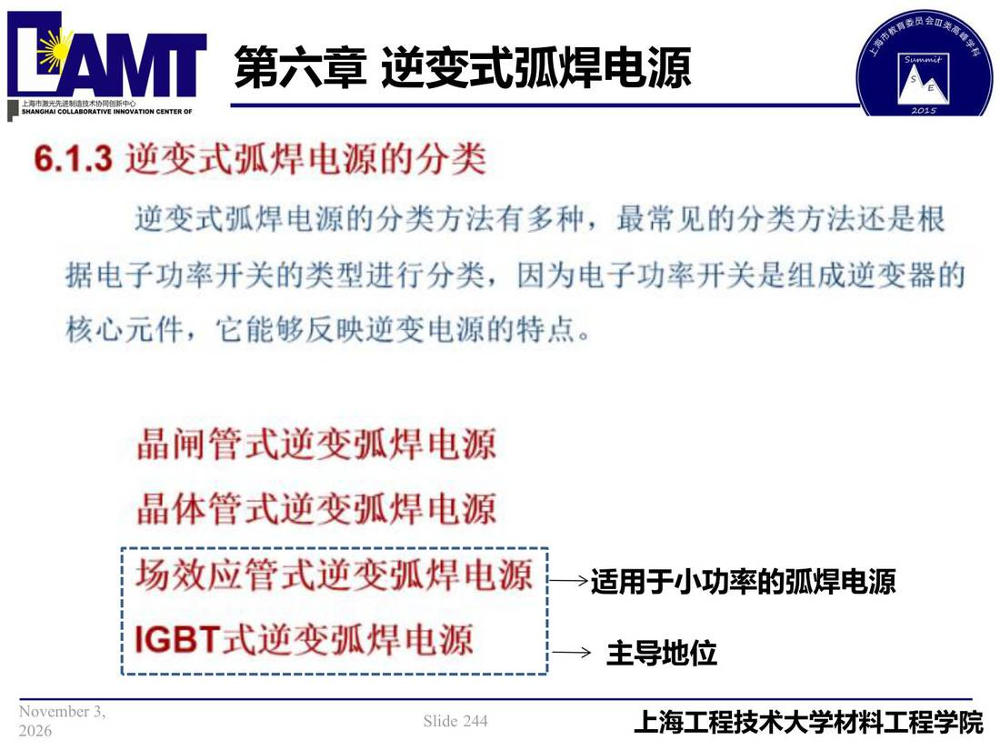

06 第6章 逆变式弧焊电源/p244 适用于小功率的弧焊电源
p244 适用于小功率的弧焊电源
📄 原文：📄 弧焊电源 课件（PDF 第 244 页）（幻灯片 244/273；PDF 第 244 页）
适用于小功率的弧焊电源

讲义原文
主导地位
页面文字（OCR 机读，可能有错字，以页图为准）
6.1.3逆变式弧焊电源分类 逆变式弧焊电源的分类方法有多种，最常见的分类方法还是根 据电子功率开关的类型进行分类，因为电子功率开关是组成逆变器 核心元件，它能够反映逆变电源特点。 晶闸管式逆变弧焊电源 晶体管式逆变弧焊电源 场效应管式逆变弧焊电源 IGBT式逆变弧焊电源 →适用于小功率弧焊电源 主导地位